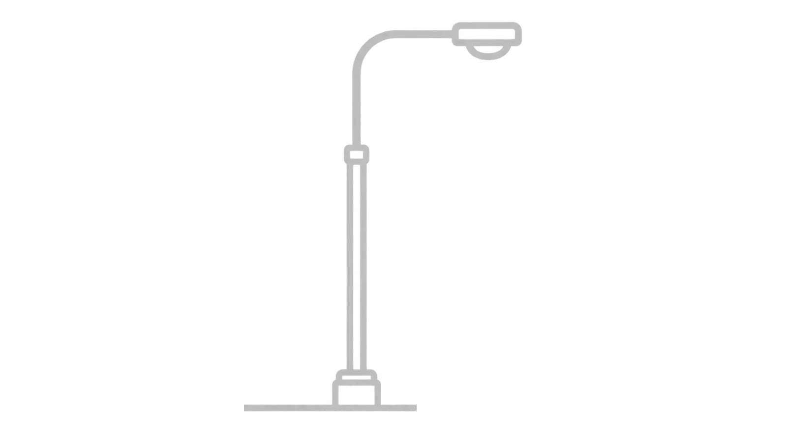

Pitek Oy
Asiantunteva raskaan kaluston sähkö- ja piirturiosaaja Jyväskylästä. Laajalla osaamisella ja laadukkaalla palvelulla olemme auttaneet asiakkaitamme pitämään pyörät pyörimässä jo vuodesta 1981.

Pitek Oy on Jyväskylässä jo vuodesta 1981 alkaen toiminut raskaankaluston sähköasennusten ja ajoneuvoelektroniikan ammattilainen. Pitkä historiamme ja vankka kokemuksemme takaavat, että työt tehdään aina kerralla oikein ja alan tiukimpia laatuvaatimuksia noudattaen. Olemme valtakunnallisesti tunnettu ja arvostettu asiantuntija.
Monipuoliseen palvelutarjontaamme kuuluvat keskeisesti:
Avoinna:
Ma - Pe: 08:00 - 16:00
Käyntiosoite:
Palokärjentie 6,
40320 Jyväskylä
Puhelin:
+358 504535130
Sähköposti:
jukka.penttinen@pitek.fi
Klikkaa alta palvelua siirtyäksesi kyseisen palvelun esittelysivulle.